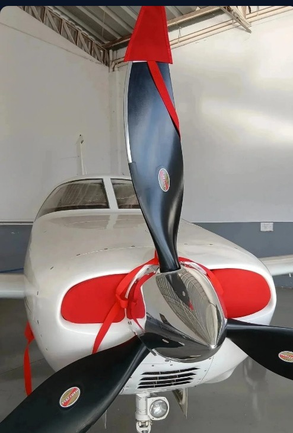

Pistão
Monomotores
Proteção para hélice, entradas de ar e cabine de aviões monomotores a pistão, do treinamento ao uso particular.
- Capa de ponta de hélice
- Tampões de entrada de ar
- Protetor de spinner
- Capa externa de cabine
- Para-sol de para-brisa
- Para-sóis de janelas
- Fitas “Remove Before Flight”
- Kit completo para monomotor